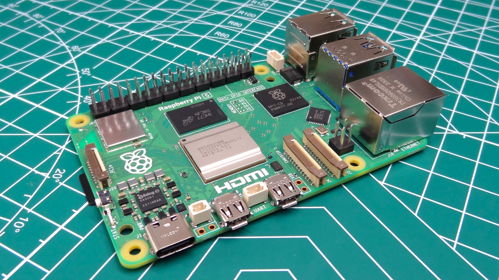
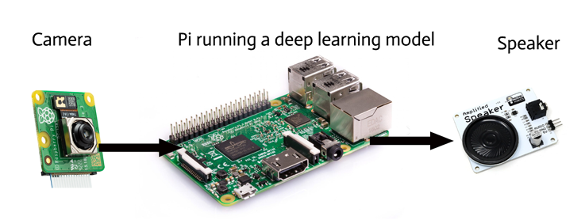

Personal Recognition on Raspberry Pi
Personal Project
Overview
As part of my final year computer vision course, COSC428, we are doing a personal-directed project. After talking with my flatmates, we thought it would be great if I made a device which could sit on the wall and play a pre-recorded message or themesong the first time they come into the kitchen.
This system runs on a Raspberry Pi 5 and uses OpenCV for camera capture and the face-recognition python library for recognition. Five images per flatmate were converted into embeddings, and each frame of the camera is similarly converted. The system then compares the current embedding to the database, and if there is a match, it plays an audio track corresponding to the flatmate recognised.


Tools and skills
- Code and peripheral integration in Raspberry Pi OS.
- Computer vision systems and personal recognition.
- Cad design and 3D printing to make the mounted case.
Limitations and Improvements
- This project is still in ideation stage, but will be completed by 20th April. I thought it best to include it anyway, because it is of great interest to me.
- It would be great to have functionality to record a message and assign it to a flatmate. This is a stretch goal if the rest of the project implementation is finished early.